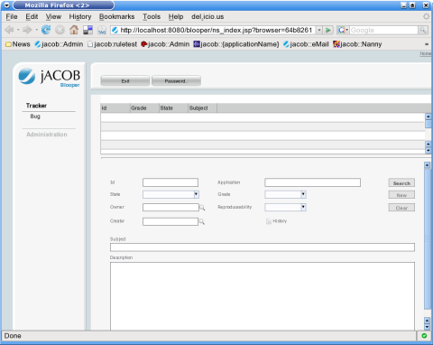
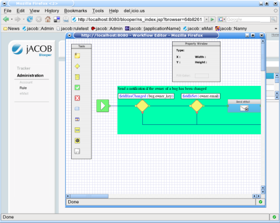
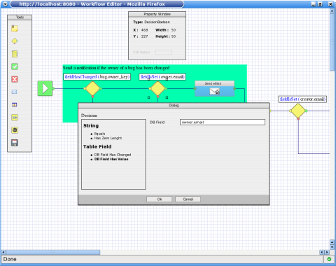
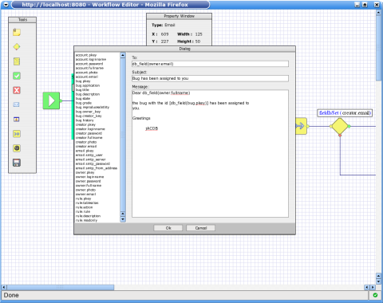

About the Open-jACOB Blooper applicationThe zero code Open-jACOB defect tracker web application. You can extend the defect tracker and it is not neccessary to write any line of code. All the business logic will be handled in the Visio like workflows - do it the smart way.You can edit the workflows online in your InternetExplorer or Firefox with the Open-jACOB Draw2D component. This application is part of the Open-jACOB Designer templates and can create automaticly in the Open-jACOB Designer. |
 Contact: info AT openjacob DOT org
|